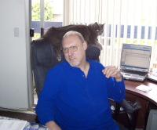
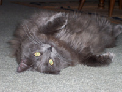

.jpg)
Growing up on the border of the Massachusetts-Rhode Island line, Peters undergraduate
work took place for the first two years at the Community College of Rhode Island, pursuing a
Bachelor’s Degree in Communications with enough credits for a Music, English, and Philosophy
minor. He chose Philosophy and graduated in 1984.
Of the many authors he’s been influenced by, Peter found the works of
Plato—The Republic one of the most interesting in describing humanity’s psychological
development and concepts of justice. Alice A. Bailey, a theosophist, not to be confused with the
study of theology, is a favorite influential author of Lancellotti, along with Helena Petrovna
Blavatsky who brought Theosophy, also known as the occult, to America in 1875 with Henry
Steel Olcott.
Having also studied theology, Peter held on to the belief that no one particular religion had
all the answers to the inner workings of the universe as he believed they all had some
contribution to “truth.” The author feels labels pigeonhole us. He believes it limits ones views when thinking outside the box, especially discussing the nature of God, the supernatural, and how it affected his upbringing with his personal relationship with a higher power.
 Other literature he was influenced by, which impacted his thoughts of the psychological and
philosophical nature of humanity, include Ralph Waldo Emerson, Edgar Allen Poe, Walt
Whitman, and one of Peter’s favorite authors, William Shakespeare.
Other literature he was influenced by, which impacted his thoughts of the psychological and
philosophical nature of humanity, include Ralph Waldo Emerson, Edgar Allen Poe, Walt
Whitman, and one of Peter’s favorite authors, William Shakespeare.
Some of the more modern authors he’s read include C.S. Lewis, J.K. Rowling, and Madeleine L’Engle in the realm of fantasy, as well as Isaac Asimov, Frank Herbert, and Arthur C. Clark as Peter felt these writers created worlds and realms of science fiction thought that brought him joy.
Another author, which fascinated him in the realm of drama and screenplay writing, as
well as being one of the first to introduce him to gay thought, was the late great Tennessee
Williams. He was a gay man certainly out of the closet for the times he lived in, making a
thorough examination about mortality in a variety of screenplays, despite his dark view of
homosexuality colored by his own upbringing. As for Lancellotti’s interest in immortality, Ann
Rice examined the possibility of what life as a vampire could have been like, which excited his
macabre side. He’s also read many other vampire novels, including probably one of the most
famous, Bram Stoker’s “Dracula.”

During his daily working life, after many years of experience in a variety of settings
starting as an account executive at an ad agency, he eventually became an expert in sales and
marketing. Beginning with an infomercial company, and then managing a sales team at an
internet advertising start-up, he then had close to 20 years of experience in telecommunications
and Cable TV, which utilized his Bachelor’s degree in Communications from Rhode Island
College. In 2008 when the U.S. market crashed, Peter decided to reinvent himself.
After discussing his next career move with friends and his husband, he reminisced over a
part-time job he had as the Recreational Director at the Institute of Mental Health in Cranston,
Rhode Island.
Lancellotti was a classically trained guitarist from the age of eight, and in addition to his training, he realized he sincerely enjoyed working with older adults.
 He was always attracted to older people in his life as he surrounded himself with those
smarter than he was because of his innate thirst for knowledge. He also discovered about himself
that he enjoyed the company of older men with whom he found more attractive on a variety of
levels as well. Regarding his career, his plan was to make a simple transition from sales and marketing in Cable TV to telehealth.
After doing his graduate work in gerontology at the University of Southern California, which is the study of aging with a particular emphasis on older adults, Peter ended up working in scientific research for over four years. It was not what he expected, recruiting older adults into a longitudinal study to experiment with the hypothesis of whether or not Alzheimer’s was detectable with our current instrumentation. Peter was not only responsible for recruitment, but also administering cognitive testing. He never did anything half-heartedly. Being in demand, other professors recruited him for four other studies, which he followed through to their completion.
He was always attracted to older people in his life as he surrounded himself with those
smarter than he was because of his innate thirst for knowledge. He also discovered about himself
that he enjoyed the company of older men with whom he found more attractive on a variety of
levels as well. Regarding his career, his plan was to make a simple transition from sales and marketing in Cable TV to telehealth.
After doing his graduate work in gerontology at the University of Southern California, which is the study of aging with a particular emphasis on older adults, Peter ended up working in scientific research for over four years. It was not what he expected, recruiting older adults into a longitudinal study to experiment with the hypothesis of whether or not Alzheimer’s was detectable with our current instrumentation. Peter was not only responsible for recruitment, but also administering cognitive testing. He never did anything half-heartedly. Being in demand, other professors recruited him for four other studies, which he followed through to their completion.

After over four years of being a research assistant, he decided that he could help older
adults in a better capacity and opened his own home care agency in Los Angeles County serving
the LGBTQ (Lesbian, Gay, Bisexual, Transgender, and Questioning) older adult demographic, which surprisingly, had never been done successfully.
Here is when his career came to a screeching halt after developing comorbidities of his own at
the end of 2016 with other responsibilities. Unexpectedly, his mother, living on the east coast
called in early 2017 to ask her only family and son, Peter, to help her. Unfortunately, after five visits through September 2018, the year that he brought his mother’s situation almost under control, he also had to care for his husband whose health was failing. Lancellotti lost the love of his life to lung cancer, coupled with cardiomyopathy. No aggressive treatments, without killing his husband, were possible. The only alternative was palliative care.
As if Peter hadn’t suffered enough tragedy, after waiting three years for his disability hearing, he had to appear in court the week after his husband died.
This would be the beginning of Peter’s next chapter in life—writing.